Chapter 5 Results
5.1 Dead vs. Time
First we take a look at the relationship between average time and total players dead in each game.
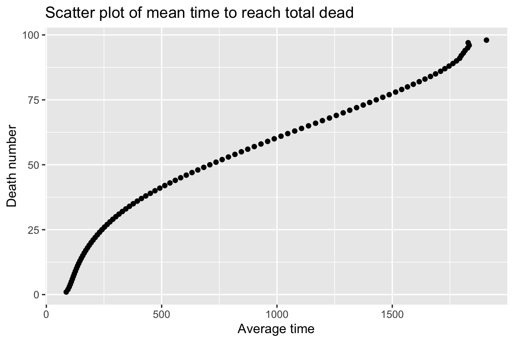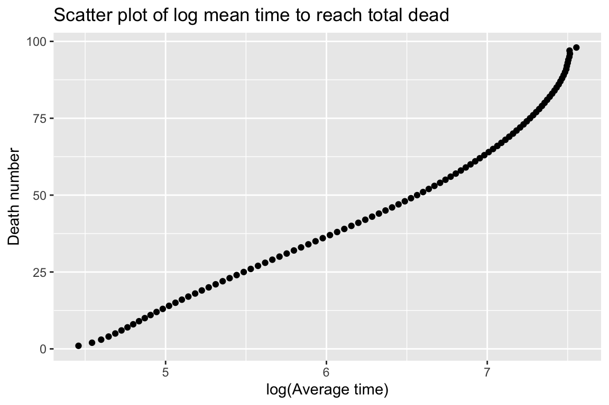
Clearly, there are more people dying at the beginning of the game, and as the game proceed, the amount of people dying slows down.
After transforming the x axis to a log frame, it’s clear to see the the total players dead vs average time follows roughly a logarithmic relationship.
5.2 Kill by method
Now we move on to the popular weapon or kill method of the games.
To analyze that, we create a cleveland dot plot of players killed by each method.
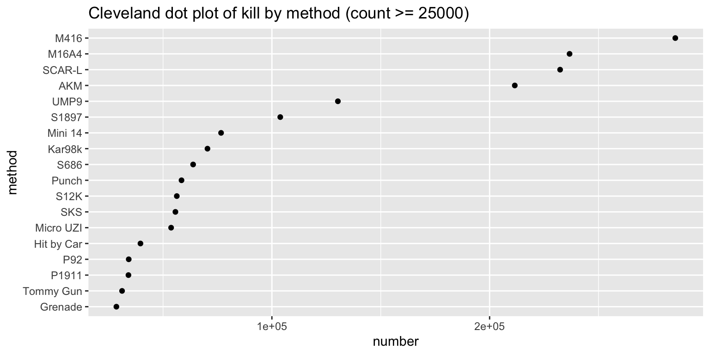
From the graph we can see that M416 is the dominate weapon of the game.
Moreover, weapons from the 5.56mm ammo family (M416, M16A4, SCAR-L etc), are in general much more popular than weapons from the other ammo family.
Assault Rifles, such as M416, M16A4, and SCAR-L from the 5.56mm ammo family, and AKM from the 7.62mm ammo family, are much more popular than other weapons kinds, such as Sniper Rifles (Kar 98k, M24 etc) or Designated Marksman Rifles (Mini 14, SKS etc).
Other non-ammo weapon, such as pan, crowbar, or molokov are in general less popular weapon than guns.
We will move on to show kill by method based on specific time range in the interative section
5.3 Winner weapon analysis
We now will analyze the winning player of each game and their choice of weapon.
For this analysis we will look at the winning player of each game and the weapon they used for the last 10 kills that they achieved in each game, if exist. Then we will create an ALLUVIAL DIAGRAM to track the movement of weapons of these last 10 kills.
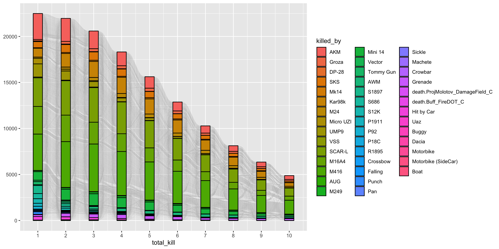
From the diagram, the first thing we can tell is that in reality, most winning players are not high-kill players, as we can see a gradual decrease of the amount of total kills of each player.
We can see that 5.56mm ammo weapons are again favored by most winning players.
Many transactions among weapons happened between switching a non-ammo weapon to ammo weapon, or an assault rifle to sniper rifle.
5.4 Killer positiomn heatmap
Now we move on to analyze the popular places where most fights take place. To do that we will create a heatmap of the killer position of each game using a 2D density plot.
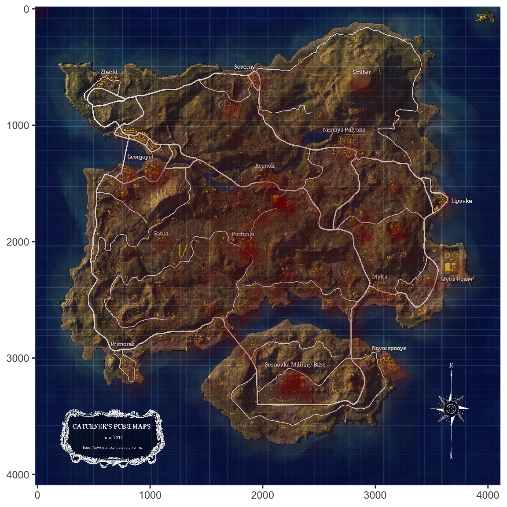
From the heat map we can clearly see that the most popular locations for fights are Pochinki, Mylta, Sosnovka Military Base and their surrounding areas.
A good advice for beginner is to avoid these areas and choose places that were less popular in fighting.
5.5 K/D analysis
Moving forward, we will analyze the performance of players.
For that, I will introduce a concept called K/D, which is short for Kill-Death ratio. K/D is the total amount of people a player killed divided by the total amount of times a player got killed.
Typically, the higher the K/D is, the better the player is at the game.
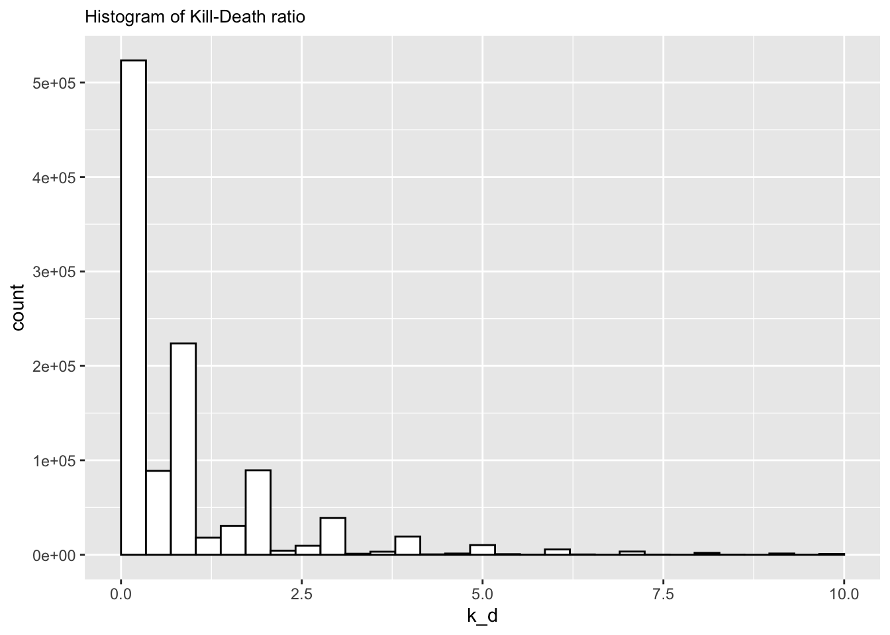
From the histogram of K/D value, we can see that the distribution of K/Ds is extremely skewed to the right.
To gain more insight, we split the data set based on high-low K/D values.

I split the data set based on low K/D value (K/D <= 3.0) and high K/D value (if K/D > 3.0).
From the graph, we can see that in reality, most of the K/Ds ranged from 0.5 to 1.5.
In reality, is extremely rare to kill more that 3 people per death on average.
5.6 Individual analysis
Now we will look at the individual behavior good vs bad player.
For this, I shrunk the dataset to players whose total death counts range from 31 to 35 and have killed at least 30 people in total.
We will look into 3 players with the highest K/D and 3 players with the lowest K/D, and their approximate path travelled in each game.
Note:
For each path, circle dots denote kill position of that player at each game, the triangle indicates the end point of this player, either they were killed or won the game at the spot.
5.6.1 Top player analysis
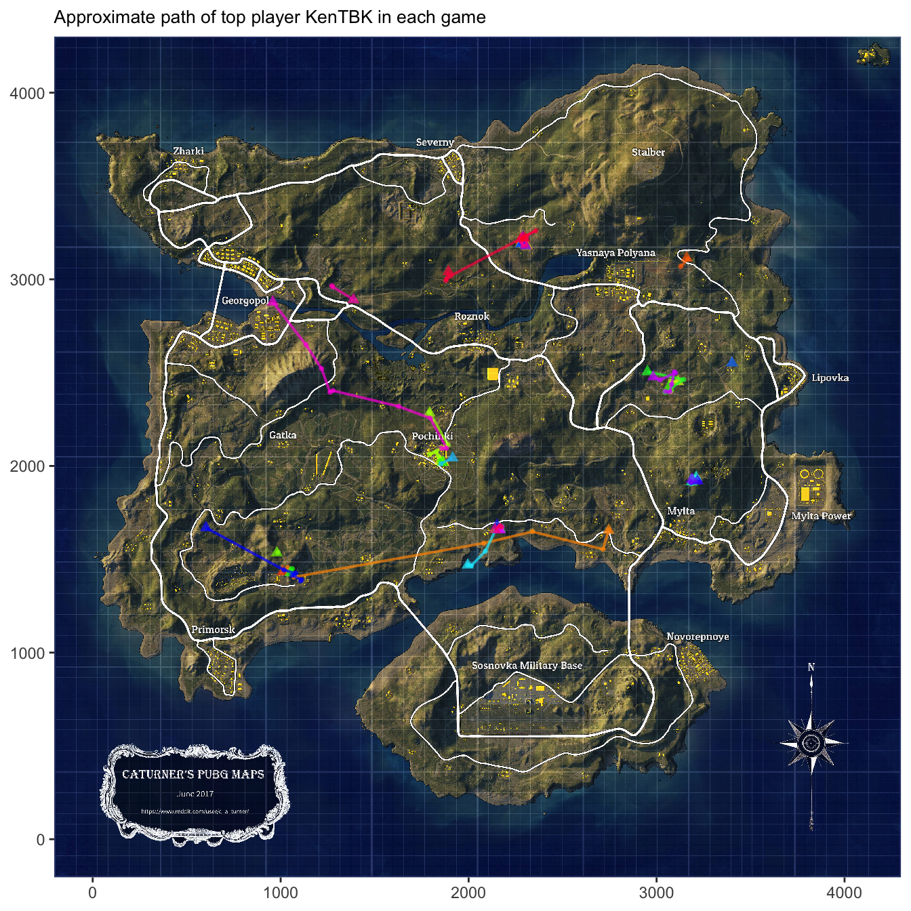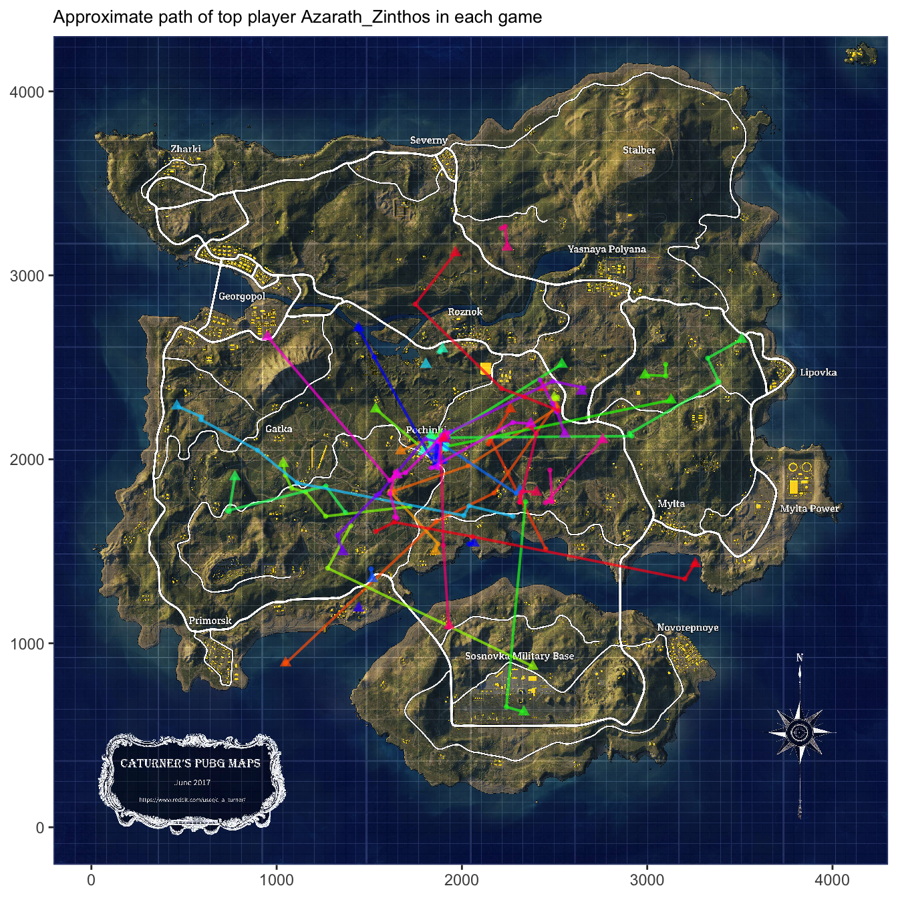
➔ Some interesting behavior of the first top player KenTBK include that they have a few preferred drop spots, including Pochinki area south-west part of Erangel and eastern Erangel. They don’t travel a lot, but are usually able to maintain a high kill within the spot that they are staying.
➔ On the other hand, the second top player Azarath_Zinthos is much more of a heavy fighter, they usually only drop at Pochinki and are about to make their way out most of the times. They also travel much more than the previous player.
➔ The third top player HuYa_Suancai also like to drop at Pochinki area, but they also sometime will drop at upper west Erangel or other locations. They also travel a lot within each game, and is the only player among all three who travel through water as well.
In general, it seems like all of these top players have their preferred drop spot, and where able to move their way out with very high kills.
5.6.2 Lower player analysis
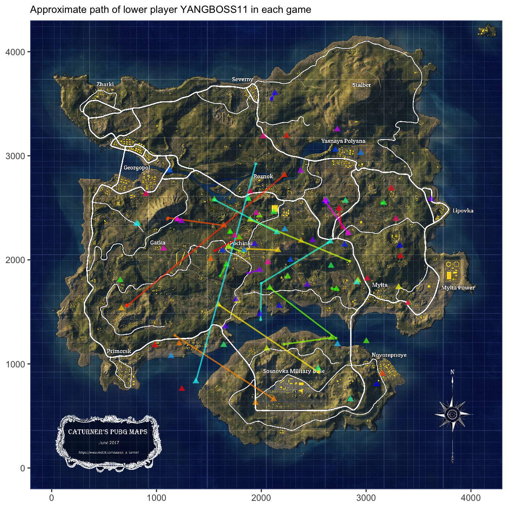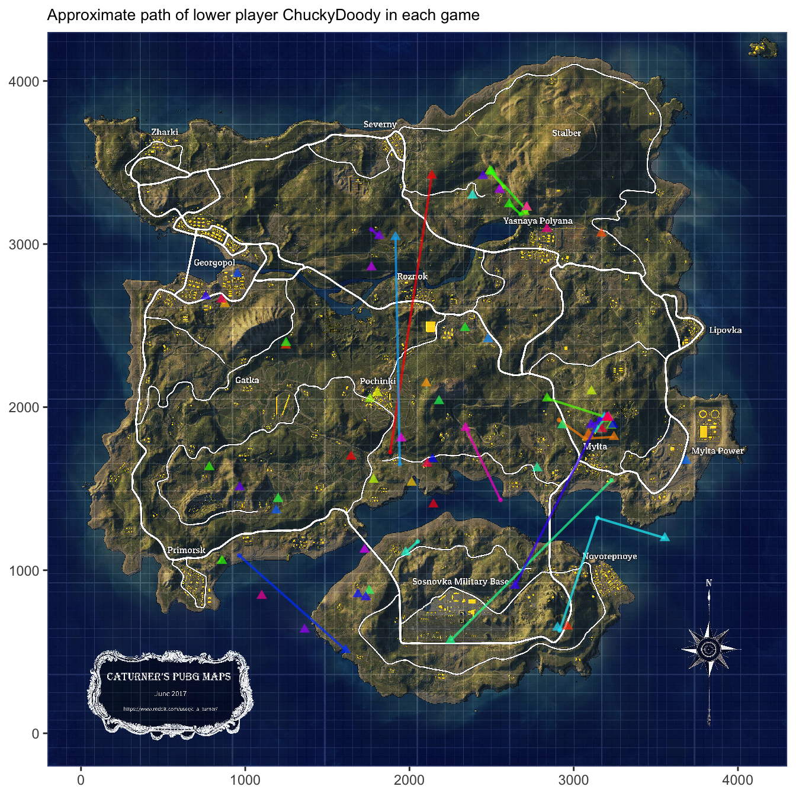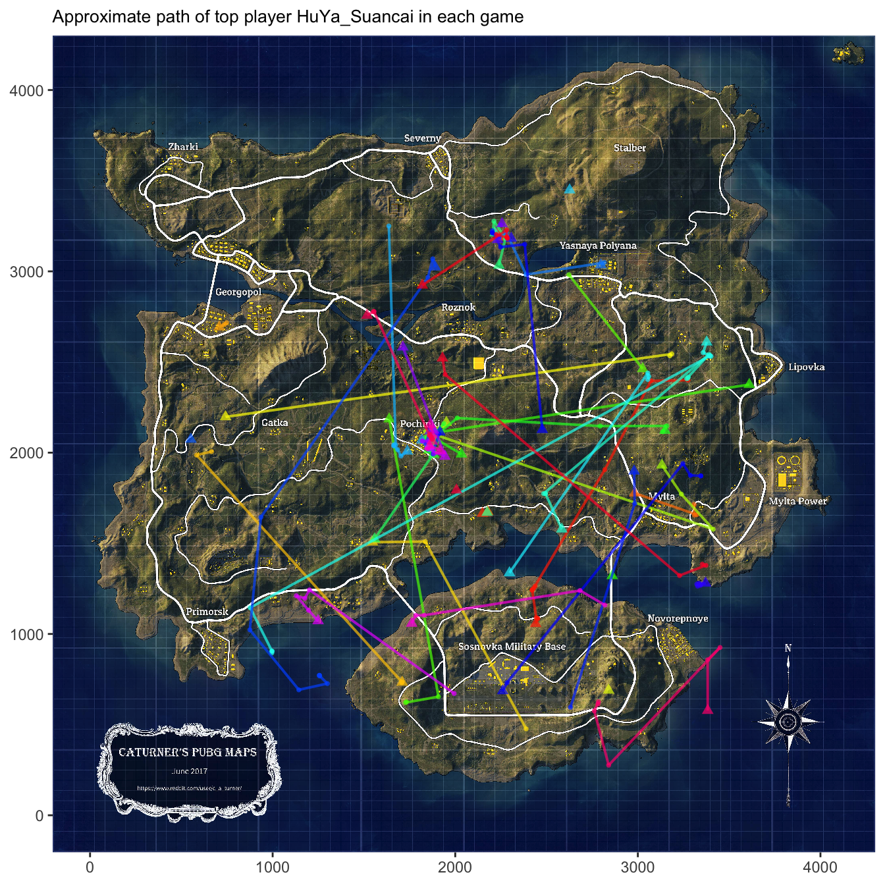
The behavior of all of the three bottom players have one thing in common: they don’t have a preferred drop spot. They will land at random places and will be killed shortly after.
One good advice to give for beginner is that always have a preferred drop spot so that you are familiar with the set up of the spot, either a place with heavy fighting or not, from there you can gradually expand your location.
5.7 Kill ratio vs. Ranking
Finally, we will analyze whether it is better to fight or hide to gain a better placement in the game.
To do that, we will introduce a new variable called the kill ratio.
Kill ratio is measured by the amount of people that a player killed for each game divided by the sum of player distance ride and player distance killed.
Since the bigger amount of player killed indicates heavier level of fighting and more distance of traveling means higher possibility of hiding, the bigger the kill ratio, the more fighting and less hiding of the player.
From the graph of team placement vs kill ratio, it is clear that the there is a positive correlation between higher kill ratio and lower team placement.
Therefore, combined with the behavior analysis of top vs low K/D players, for regular users, to get a better rank, it is wiser to HIDE than FIGHT.